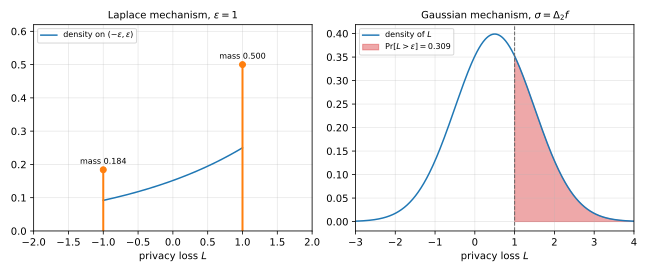

5 Approximate Differential Privacy
Pure differential privacy (DP) bounds the ratio of two output probabilities by \(e^\varepsilon\) on every event. This chapter adds a small additive slack \(\delta\) to that bound. The relaxed definition, \((\varepsilon,\delta)\)-DP, lets an algorithm fail with probability about \(\delta\), and in exchange it admits the Gaussian mechanism, which adds less noise than the Laplace mechanism to statistics with many coordinates. It is also the setting in which the next chapter’s advanced composition holds.
The chapter defines the relaxation and reads it through the privacy loss random variable. Two examples then show how badly a mechanism may behave with probability \(\delta\), which forces \(\delta\) to be much smaller than \(1/n\). The Gaussian mechanism comes next, with a full privacy proof, and the chapter ends by checking that post-processing, group privacy and composition survive the relaxation.
5.1 The definition
An additive bound alone is the wrong notion of privacy. Suppose we asked only that, for all neighbours and all events,
\[ \Pr[M(X)\in T] \le \Pr[M(X')\in T] + \delta . \tag{5.1}\]
This allows no useful accuracy when \(\delta\) is small, and it allows harmful algorithms when \(\delta\) is large (Vadhan, 2017, Section 1.6). The second failure appears in Section 5.3. Combined with the multiplicative bound of pure DP, however, an additive term gives the right definition.
Definition 5.1 (Approximate differential privacy) Let \(\varepsilon \ge 0\) and \(\delta \in [0,1]\). A randomized algorithm \(M\colon \mathcal X^n \to \mathcal Y\) is \((\varepsilon,\delta)\)-differentially private if for all neighbours \(X \sim X'\) and all events \(T \subseteq \mathcal Y\),
\[ \Pr[M(X) \in T] \le e^{\varepsilon}\Pr[M(X') \in T] + \delta . \tag{5.2}\]
At \(\delta = 0\) this is the \(\varepsilon\)-DP of the randomized response chapter, which from now on is called pure DP. A definition with \(\delta > 0\) is called approximate DP. The rest of the chapter is about what the extra \(\delta\) permits.
5.2 The privacy loss random variable
To read Definition 5.1, compare the two output distributions outcome by outcome. Fix neighbours \(X \sim X'\), and write \(P\) and \(Q\) for the distributions of \(M(X)\) and \(M(X')\). Let \(p\) and \(q\) be their densities with respect to a common measure: the counting measure when \(\mathcal Y\) is countable, so that \(p(y) = \Pr[M(X) = y]\), and Lebesgue measure when both have ordinary densities. In general, the measure \(P + Q\) always serves.
Definition 5.2 (Privacy loss) The privacy loss of an outcome \(y\) is
\[ \ell(y) = \ln\frac{p(y)}{q(y)}, \tag{5.3}\]
with \(\ell(y) = +\infty\) when \(p(y) > 0 = q(y)\). The privacy loss random variable is \(L = \ell(Y)\) for \(Y \sim P\), that is, for \(Y\) drawn from \(M(X)\).
Outcomes with \(p(y) = 0\) have probability zero under \(P\), so \(L\) is defined with probability \(1\). A large value of \(L\) means that the observed outcome is much more likely under \(X\) than under \(X'\), so it is evidence that the dataset is \(X\). An infinite value means that the outcome is impossible under \(X'\), and seeing it rules \(X'\) out.
The Laplace mechanism of the previous chapter gives a first example. It applies to a function \(f\colon\mathcal X^n \to \mathbb R\) whose value changes by at most \(\Delta_1\) between neighbours. The mechanism releases \(f(X) + Y\), where the noise \(Y\) has the Laplace density \(\frac{1}{2b}e^{-|y|/b}\) with scale \(b = \Delta_1/\varepsilon\), and it is \(\varepsilon\)-DP.
Example 5.1 Take neighbours with \(f(X) = a\) and \(f(X') = a - \Delta_1\), the largest gap allowed. The densities give
\[ \ell(y) = \frac{\varepsilon}{\Delta_1}\big(|y - a + \Delta_1| - |y - a|\big), \tag{5.4}\]
which equals \(\varepsilon\) for \(y \ge a\), equals \(-\varepsilon\) for \(y \le a - \Delta_1\), and is linear in between.
- The event \(y \ge a\) has probability \(\tfrac12\) under \(P\), because the noise is symmetric. So \(L\) has an atom of mass \(\tfrac12\) at \(\varepsilon\).
- The event \(y \le a - \Delta_1\) needs noise below \(-\Delta_1 = -\varepsilon b\), which has probability \(\tfrac12 e^{-\varepsilon}\). So \(L\) has an atom of mass \(\tfrac12 e^{-\varepsilon}\) at \(-\varepsilon\).
- In between, write \(y = a - s\) with \(s \in (0, \Delta_1)\), so that \(L = \varepsilon - 2\varepsilon s/\Delta_1\). The variable \(s\) has density \(\frac{\varepsilon}{2\Delta_1}e^{-\varepsilon s/\Delta_1}\), and the change of variables gives \(L\) the density \(\tfrac14 e^{(\ell - \varepsilon)/2}\) on \((-\varepsilon, \varepsilon)\), of total mass \(\tfrac12(1 - e^{-\varepsilon})\).
The three masses add up to \(1\). The privacy loss never leaves \([-\varepsilon, \varepsilon]\), as Figure 5.1 shows on the left.

The example is an instance of a general fact. Pure DP says that the privacy loss is bounded by \(\varepsilon\) with probability \(1\), and approximate DP says, roughly, that it is bounded by \(\varepsilon\) except with probability \(\delta\). Both follow from one identity, which computes the largest violation of the multiplicative bound over all events.
Lemma 5.1 For neighbours \(X \sim X'\) and \(\varepsilon \ge 0\),
\[ \sup_{T \subseteq \mathcal Y}\Big(\Pr[M(X)\in T] - e^\varepsilon \Pr[M(X')\in T]\Big) = \mathbb E\Big[\big(1 - e^{\varepsilon - L}\big)_+\Big], \tag{5.5}\]
where \((z)_+ = \max(z, 0)\) and \(e^{-\infty} = 0\). So \(M\) is \((\varepsilon,\delta)\)-DP if and only if the right-hand side is at most \(\delta\) for every ordered pair of neighbours.
Proof.
- For an event \(T\), write the difference as an integral, \(P(T) - e^\varepsilon Q(T) = \int_T (p - e^\varepsilon q)\). The integrand is positive exactly on \(B = \{y : p(y) > e^\varepsilon q(y)\}\), so the integral is largest for \(T = B\), where it equals \(\int (p - e^\varepsilon q)_+\).
- Where \(p(y) = 0\), the integrand \((p - e^\varepsilon q)_+\) is \(0\). Where \(p(y) > 0\), it equals \(p(y)\big(1 - e^{\varepsilon}q(y)/p(y)\big)_+ = p(y)\big(1 - e^{\varepsilon - \ell(y)}\big)_+\), which is also right when \(q(y) = 0\) and \(\ell(y) = \infty\).
- Integrating \(p(y)\) times a function of \(y\) is taking the expectation under \(P\), so \(\int(p - e^\varepsilon q)_+ = \mathbb E[(1 - e^{\varepsilon - L})_+]\).
- Definition 5.1 asks that the left-hand side of Equation 5.5 be at most \(\delta\) for every ordered pair of neighbours, which proves the last sentence.
The right-hand side of Equation 5.5 is called the hockey-stick divergence of \(P\) from \(Q\), after the shape of the function \(z \mapsto (1 - e^{\varepsilon - z})_+\). Its integrand is \(0\) when \(L \le \varepsilon\) and at most \(1\) otherwise, which gives the two readings of the definition.
Theorem 5.1 Let \(M\colon\mathcal X^n \to \mathcal Y\) be a randomized algorithm, and let \(L\) be its privacy loss random variable for an ordered pair of neighbours \(X \sim X'\).
- \(M\) is \(\varepsilon\)-DP if and only if \(L \le \varepsilon\) with probability \(1\) for every ordered pair of neighbours. In that case \(|L| \le \varepsilon\) with probability \(1\).
- If \(\Pr[L > \varepsilon] \le \delta\) for every ordered pair of neighbours, then \(M\) is \((\varepsilon,\delta)\)-DP.
- If \(M\) is \((\varepsilon,\delta)\)-DP, then for every \(t > 0\) and every ordered pair of neighbours,
\[ \Pr[L > \varepsilon + t] \le \frac{\delta}{1 - e^{-t}} . \tag{5.6}\]
Proof.
- With \(\delta = 0\), Lemma 5.1 says that \(M\) is \(\varepsilon\)-DP exactly when \(\mathbb E[(1 - e^{\varepsilon-L})_+] = 0\) for every pair. The integrand is nonnegative, so this holds exactly when it is \(0\) with probability \(1\), that is, when \(L \le \varepsilon\) with probability \(1\). For the lower bound, apply the same fact to the pair \((X', X)\). It gives \(q \le e^\varepsilon p\) except on a set of \(Q\)-probability \(0\), and that set also has \(P\)-probability \(0\), because pure DP gives \(P(T) \le e^\varepsilon Q(T)\). So \(\ell \ge -\varepsilon\) with probability \(1\) under \(P\).
- The integrand \((1 - e^{\varepsilon - L})_+\) is \(0\) when \(L \le \varepsilon\) and at most \(1\) when \(L > \varepsilon\). So its expectation is at most \(\Pr[L > \varepsilon] \le \delta\), and Lemma 5.1 gives \((\varepsilon,\delta)\)-DP.
- On the event \(L > \varepsilon + t\), the integrand is at least \(1 - e^{-t}\). So \((1 - e^{-t})\Pr[L > \varepsilon + t] \le \mathbb E[(1 - e^{\varepsilon-L})_+] \le \delta\), by Lemma 5.1.
The converse of part 2 fails with the same parameters, which is why part 3 pays in both \(\varepsilon\) and \(\delta\). For example, the Gaussian mechanism on the right of Figure 5.1 has privacy loss above \(1\) with probability \(0.309\), yet Proposition 5.3 below shows that it is \((1, 0.127)\)-DP. Taking \(t = \varepsilon\), an \((\varepsilon,\delta)\)-DP mechanism has privacy loss above \(2\varepsilon\) with probability at most \(\delta/(1 - e^{-\varepsilon})\). Up to these constants, then, \((\varepsilon,\delta)\)-DP says that the privacy loss is at most \(\varepsilon\) except with probability about \(\delta\). The definition says nothing about what happens on that rare event.
5.3 How small δ must be
On the event of probability \(\delta\), the privacy loss may be infinite. The first example shows this in its crudest form.
Example 5.2 Let \(\bot\) be a fixed symbol. The mechanism \(M(X)\) outputs \(\bot\) with probability \(1 - \delta\) and outputs the whole dataset \(X\) with probability \(\delta\). For neighbours \(X \ne X'\) and an event \(T\),
\[ \Pr[M(X)\in T] \le (1-\delta)\,\mathbf 1[\bot \in T] + \delta \le \Pr[M(X')\in T] + \delta , \tag{5.7}\]
so \(M\) is \((0,\delta)\)-DP. With probability \(1 - \delta\) the privacy loss is \(\ln\frac{1-\delta}{1-\delta} = 0\), and with probability \(\delta\) it is infinite, because the output \(X\) is impossible under \(X'\).
This mechanism publishes everyone’s data with probability \(\delta\), so \(\delta\) must be small. The next example shows how small. It publishes each record on its own, and that makes \(\delta\) comparable to \(1/n\).
Definition 5.3 (Name and shame) For \(\delta \in [0,1]\), the mechanism \(\mathrm{NS}_\delta\) draws independent coins \(c_1, \dots, c_n\), each equal to \(1\) with probability \(\delta\), and outputs the set of pairs \(\{(i, X_i) : c_i = 1\}\).
Each record, which might be a person’s medical file, is published in the clear with probability \(\delta\).
Proposition 5.1 For every \(\delta \in [0,1]\), \(\mathrm{NS}_\delta\) is \((0,\delta)\)-DP.
Proof.
- Let \(X\) and \(X'\) differ only in entry \(i\), and run the mechanism on both datasets with the same coins. Let \(E\) be the event \(c_i = 1\), so \(\Pr[E] = \delta\).
- On the complement \(\bar E\), entry \(i\) is not published, and the output is a function of the coins and of the entries \(j \ne i\), which the two datasets share. So on \(\bar E\) the two outputs are equal.
- For an event \(T\), split on \(E\) and use step 2:
\[ \Pr[\mathrm{NS}_\delta(X) \in T] = \Pr[\mathrm{NS}_\delta(X) \in T,\ \bar E] + \Pr[\mathrm{NS}_\delta(X)\in T,\ E] \le \Pr[\mathrm{NS}_\delta(X') \in T,\ \bar E] + \Pr[E] . \tag{5.8}\]
- The first term is at most \(\Pr[\mathrm{NS}_\delta(X') \in T]\) and the second is \(\delta\), which is Equation 5.2 with \(\varepsilon = 0\).
Proposition 5.2 The probability that \(\mathrm{NS}_\delta\) publishes at least one record is \(1 - (1-\delta)^n\), and
\[ n\delta - \frac{(n\delta)^2}{2} \le 1 - (1-\delta)^n \le n\delta . \tag{5.9}\]
Proof.
- The coins are independent, so no record is published with probability \((1-\delta)^n\), and the complement gives the formula.
- The upper bound is the union bound over the \(n\) records, each published with probability \(\delta\).
- For the lower bound, \(1 - \delta \le e^{-\delta}\) gives \((1-\delta)^n \le e^{-n\delta}\). The inequality \(e^{-x} \le 1 - x + x^2/2\) for \(x \ge 0\) then gives \(1 - (1-\delta)^n \ge n\delta - (n\delta)^2/2\).
So the chance that someone is named is about \(n\delta\) when \(n\delta\) is small. At \(\delta = 1/n\), step 3 of the proof gives a chance of at least \(1 - e^{-1} \approx 0.632\) that some record is published in the clear. A guarantee that allows this is not privacy, so \(\delta\) must be well below \(1/n\). Even \(\delta = n^{-1.1}\) allows a chance of up to \(n\delta = n^{-0.1}\), which is \(0.25\) for a million records. Common choices are \(\delta \le 1/n^2\), or a \(\delta\) that is cryptographically small, smaller than every inverse polynomial in \(n\).
In both examples the privacy loss is \(0\) or infinite, so the rare event is a catastrophe. Without more information about a mechanism, one has to assume this worst case. Many mechanisms degrade gracefully instead. Their privacy loss exceeds \(\varepsilon\) with probability about \(\delta\) but rarely exceeds it by much, and they satisfy a family of guarantees at once, such as \((1, 10^{-3})\)-DP and \((2, 10^{-6})\)-DP. The Gaussian mechanism of the next section is the main example, as Example 5.5 shows. A single pair \((\varepsilon,\delta)\) is a crude threshold on the distribution of the privacy loss. Rényi differential privacy and concentrated differential privacy describe the whole tail of that distribution, and they appear in later chapters.
The definition must be stated for events, not single outcomes. For pure DP the two are equivalent on countable outputs, by the pointwise lemma of the randomized response chapter. For approximate DP the pointwise version is much weaker.
Example 5.3 Let \(m = \lceil 1/\delta\rceil\) for some \(\delta \in (0,1)\). The mechanism \(M(X) = (X, S)\) outputs the whole dataset together with a number \(S\) drawn uniformly from \(\{1, \dots, m\}\). Every single outcome has probability at most \(1/m \le \delta\), so for all neighbours and all outcomes \(y\),
\[ \Pr[M(X) = y] \le e^{\varepsilon}\Pr[M(X') = y] + \delta . \tag{5.10}\]
Yet the event \(T = \{(X, s) : 1 \le s \le m\}\) has probability \(1\) under \(X\) and \(0\) under \(X'\), so \(M\) is not \((\varepsilon, \delta')\)-DP for any \(\varepsilon\) and any \(\delta' < 1\).
The privacy loss of this mechanism is infinite with probability \(1\). So Theorem 5.1, which looks at one outcome at a time through the privacy loss, catches the failure that the pointwise inequality misses.
5.4 The Gaussian mechanism
The Laplace mechanism calibrates its noise to the \(\ell_1\) sensitivity. The Gaussian mechanism adds Gaussian noise instead, calibrated to the \(\ell_2\) sensitivity, which can be much smaller.
Definition 5.4 (ℓ2 sensitivity) The \(\ell_2\) sensitivity of a function \(f\colon \mathcal X^n \to \mathbb R^k\) is
\[ \Delta_2(f) = \sup_{X \sim X'} \|f(X) - f(X')\|_2 . \tag{5.11}\]
The \(\ell_1\) sensitivity \(\Delta_1(f)\) of the previous chapter is the same supremum with the \(\ell_1\) norm. The two norms, and so the two sensitivities, are within a factor \(\sqrt k\) of each other.
Lemma 5.2 For every \(x \in \mathbb R^k\), \(\|x\|_2 \le \|x\|_1 \le \sqrt k\,\|x\|_2\). Hence \(\Delta_2(f) \le \Delta_1(f) \le \sqrt k\,\Delta_2(f)\).
Proof.
- Expanding the square, \(\|x\|_1^2 = \sum_i x_i^2 + \sum_{i\ne j}|x_i||x_j| \ge \|x\|_2^2\).
- The Cauchy–Schwarz inequality applied to \((|x_1|,\dots,|x_k|)\) and the all-ones vector gives \(\|x\|_1 = \sum_i |x_i|\cdot 1 \le \|x\|_2\sqrt k\).
- Applying both inequalities to \(f(X) - f(X')\) and taking the supremum over neighbours gives the bounds on the sensitivities.
The Gaussian distribution \(\mathcal N(\mu, \sigma^2)\) with mean \(\mu\) and variance \(\sigma^2\) has density
\[ \frac{1}{\sqrt{2\pi\sigma^2}}\exp\!\left(-\frac{(x-\mu)^2}{2\sigma^2}\right). \tag{5.12}\]
Its tails fall like \(e^{-x^2/(2\sigma^2)}\), faster than the \(e^{-|x|/b}\) of the Laplace distribution. We write \(\mathcal N(0, \sigma^2 I_k)\) for the vector of \(k\) independent \(\mathcal N(0,\sigma^2)\) coordinates.
Definition 5.5 (Gaussian mechanism) For \(f\colon\mathcal X^n \to \mathbb R^k\) and a noise level \(\sigma > 0\), the Gaussian mechanism outputs
\[ M(X) = f(X) + Y, \qquad Y \sim \mathcal N(0, \sigma^2 I_k). \tag{5.13}\]
Theorem 5.2 (Privacy of the Gaussian mechanism) Let \(f\) have \(0 < \Delta_2(f) < \infty\), and let \(\varepsilon > 0\) and \(\delta \in (0,1)\). The Gaussian mechanism with
\[ \sigma = \frac{\Delta_2(f)}{\varepsilon}\sqrt{2\ln(1/\delta) + \varepsilon} \tag{5.14}\]
is \((\varepsilon,\delta)\)-DP.
The proof is in Section 5.4.1. Asymptotically the noise level is \(\sigma = \frac{\Delta_2}{\varepsilon}\sqrt{2\ln(1/\delta)}\,(1 + o(1))\) as \(\delta \to 0\). Compared with the Laplace mechanism, whose noise has scale \(\Delta_1/\varepsilon\) in each coordinate, there are two differences. The Gaussian mechanism pays a factor \(\sqrt{2\ln(1/\delta)}\) and gives only approximate DP, and it measures sensitivity in \(\ell_2\), which can save a factor \(\sqrt k\). The next example shows that the saving can be the larger effect.
Example 5.4 Each of \(n\) people answers \(d\) yes-or-no questions, so the dataset is \(X \in \{0,1\}^{n\times d}\) with rows \(X_i \in \{0,1\}^d\). The analyst wants the vector of averages \(f(X) = \frac1n\sum_i X_i\), with small error in \(\ell_2\) norm.
- Replacing row \(x\) by row \(x'\) changes \(f\) by \((x - x')/n\). The largest change is from the all-ones row to the all-zeros row, so \(\Delta_1 = d/n\) and \(\Delta_2 = \sqrt d/n\).
- The Laplace mechanism adds \(\mathrm{Lap}(d/(\varepsilon n))\) to each coordinate, and each coordinate has variance \(2d^2/(\varepsilon n)^2\). The root mean squared \(\ell_2\) error is
\[ \sqrt{\mathbb E\|Y\|_2^2} = \sqrt{d \cdot \frac{2d^2}{\varepsilon^2n^2}} = \frac{\sqrt2\, d^{3/2}}{\varepsilon n}. \tag{5.15}\]
- The Gaussian mechanism with Equation 5.14 adds \(\mathcal N(0,\sigma^2)\) to each coordinate with \(\sigma = \frac{\sqrt d}{\varepsilon n}\sqrt{2\ln(1/\delta)+\varepsilon}\), so its root mean squared error is
\[ \sqrt d\,\sigma = \frac{d\sqrt{2\ln(1/\delta) + \varepsilon}}{\varepsilon n}. \tag{5.16}\]
- The ratio of the two errors is \(\sqrt{2d/(2\ln(1/\delta)+\varepsilon)}\). So the Gaussian mechanism is more accurate as soon as \(d > \ln(1/\delta) + \varepsilon/2\), and its advantage grows like \(\sqrt d\).
With \(d = 100\) questions, \(n = 10{,}000\) people, \(\varepsilon = 1\) and \(\delta = 10^{-6}\), the Laplace error is \(\sqrt2\cdot 1000/10{,}000 = 0.1414\) and the Gaussian error is \(100\sqrt{27.63+1}/10{,}000 = 0.0535\), smaller by a factor \(2.64\). A simulation of 20,000 runs of each mechanism gives \(0.1413\) and \(0.0535\).
Which mechanism to use is a trade-off. The Laplace mechanism gives the stronger guarantee of pure DP, and the Gaussian mechanism gives a weaker guarantee with less noise in high dimension.
5.4.1 Proof of privacy
The proof has two steps. First, the privacy loss of the Gaussian mechanism is itself Gaussian. Second, a Gaussian tail bound shows that it exceeds \(\varepsilon\) with probability at most \(\delta\), and part 2 of Theorem 5.1 concludes. Two facts about Gaussians come first.
Lemma 5.3 Let \(Z \sim \mathcal N(0,1)\).
- For constants \(\mu\) and \(a \ne 0\), \(\mu + aZ \sim \mathcal N(\mu, a^2)\).
- If \(Y_1 \sim \mathcal N(0, a^2)\) and \(Y_2 \sim \mathcal N(0, b^2)\) are independent, then \(Y_1 + Y_2 \sim \mathcal N(0, a^2 + b^2)\).
- For every \(u \ge 0\), \(\Pr[Z > u] \le e^{-u^2/2}\).
- For every \(u > 0\), \(\Pr[Z > u] \le e^{-u^2/2}/(u\sqrt{2\pi})\).
Proof.
- Completing the square in the density gives the moment generating function \(\mathbb E[e^{\lambda Z}] = e^{\lambda^2/2}\). A distribution is determined by its moment generating function when that function is finite near \(0\), as it is for all the variables here.
- For part 1, \(\mathbb E[e^{\lambda(\mu + aZ)}] = e^{\lambda\mu + \lambda^2a^2/2}\), which is the moment generating function of \(\mathcal N(\mu, a^2)\).
- For part 2, independence makes the moment generating function of the sum the product \(e^{\lambda^2a^2/2}e^{\lambda^2b^2/2} = e^{\lambda^2(a^2+b^2)/2}\).
- For part 3, Markov’s inequality applied to \(e^{uZ}\) gives \(\Pr[Z > u] \le e^{-u^2}\,\mathbb E[e^{uZ}] = e^{-u^2/2}\).
- For part 4, write \(\varphi(z) = e^{-z^2/2}/\sqrt{2\pi}\) for the density, whose derivative is \(-z\varphi(z)\). On \(z \ge u\) the ratio \(z/u\) is at least \(1\), so \(\Pr[Z > u] \le \int_u^\infty \frac zu\varphi(z)\,dz = \frac{\varphi(u)}{u}\).
Lemma 5.4 Let \(X \sim X'\), let \(M\) be the Gaussian mechanism with noise level \(\sigma\), and write \(v = f(X) - f(X')\). The privacy loss random variable of \(M(X)\) against \(M(X')\) is distributed as
\[ L \sim \mathcal N\!\left(\eta,\ 2\eta\right), \qquad \eta = \frac{\|v\|_2^2}{2\sigma^2}. \tag{5.17}\]
Proof.
- The output is \(f(X) + x\) with \(x \sim \mathcal N(0, \sigma^2 I_k)\). Its density under \(X\) is proportional to \(\exp(-\|x\|_2^2/(2\sigma^2))\). Under \(X'\), the same point is at distance \(x + v\) from the mean \(f(X')\), so its density is proportional to \(\exp(-\|x + v\|_2^2/(2\sigma^2))\), with the same constant.
- The constants cancel in the ratio, and the logarithm gives
\[ L = \frac{\|x+v\|_2^2 - \|x\|_2^2}{2\sigma^2} = \frac{1}{2\sigma^2}\sum_{j=1}^k\big((x_j+v_j)^2 - x_j^2\big) = \frac{1}{2\sigma^2}\sum_{j=1}^k \big(2x_jv_j + v_j^2\big). \tag{5.18}\]
- The constant part is \(\sum_j v_j^2/(2\sigma^2) = \eta\), the claimed mean.
- The random part is \(\frac{1}{\sigma^2}\sum_j v_jx_j\), and the terms with \(v_j = 0\) vanish. By part 1 of Lemma 5.3 each remaining term \(v_jx_j\) is \(\mathcal N(0, \sigma^2v_j^2)\), and the terms are independent. By part 2 their sum is \(\mathcal N(0, \sigma^2\|v\|_2^2)\). Dividing by \(\sigma^2\) gives \(\mathcal N(0, \|v\|_2^2/\sigma^2) = \mathcal N(0, 2\eta)\).
The mean and the variance of the privacy loss are tied, with variance twice the mean. For a single coordinate, \(k = 1\), the proof is just the identity \(L = vx/\sigma^2 + v^2/(2\sigma^2)\). A Gaussian privacy loss is special to this mechanism. The Laplace mechanism, by Example 5.1, has a loss with atoms.
Proof. Proof of Theorem 5.2.
- By part 2 of Theorem 5.1, it suffices to show \(\Pr[L > \varepsilon] \le \delta\) for every ordered pair of neighbours. If \(v = 0\) then \(L = 0\), so assume \(v \ne 0\).
- By Lemma 5.4 and part 1 of Lemma 5.3, \(L = \eta + \sqrt{2\eta}\,Z\) with \(Z \sim \mathcal N(0,1)\). So
\[ \Pr[L > \varepsilon] = \Pr\left[Z > g(\eta)\right], \qquad g(\eta) = \frac{\varepsilon - \eta}{\sqrt{2\eta}} = \frac{\varepsilon}{\sqrt{2\eta}} - \sqrt{\frac{\eta}{2}} . \tag{5.19}\]
- The function \(g\) decreases in \(\eta\), and \(\eta \le \Delta_2^2/(2\sigma^2)\) by the definition of \(\Delta_2\). Write \(t = \sqrt{2\ln(1/\delta)+\varepsilon}\), so that Equation 5.14 reads \(\sigma = \Delta_2 t/\varepsilon\) and the largest value of \(\eta\) is \(\varepsilon^2/(2t^2)\). Then
\[ g(\eta) \ge g\!\left(\frac{\varepsilon^2}{2t^2}\right) = t - \frac{\varepsilon}{2t} =: u . \tag{5.20}\]
- The value \(u\) is positive, because \(t^2 \ge \varepsilon > \varepsilon/2\). Its square is \(u^2 = t^2 - \varepsilon + \varepsilon^2/(4t^2) \ge t^2 - \varepsilon = 2\ln(1/\delta)\).
- By part 3 of Lemma 5.3, \(\Pr[L > \varepsilon] \le \Pr[Z > u] \le e^{-u^2/2} \le e^{-\ln(1/\delta)} = \delta\).
Only the upper tail of \(L\) matters in this proof, because part 2 of Theorem 5.1 bounds \(\Pr[L > \varepsilon]\), not \(\Pr[|L| > \varepsilon]\). For \(\varepsilon \le 1\) the noise level Equation 5.14 is at most \(\frac{\Delta_2}{\varepsilon}\sqrt{2\ln(1.65/\delta)}\). The sharper tail bound of part 4 of Lemma 5.3 lowers the constant \(1.65\) to \(1.25\), which is the form of the Gaussian mechanism that later chapters use.
Corollary 5.1 (Gaussian mechanism for ε ≤ 1) Let \(f\) have \(0 < \Delta_2(f) < \infty\), and let \(\varepsilon \in (0,1]\) and \(\delta \in (0,1)\). The Gaussian mechanism with
\[ \sigma = \frac{\Delta_2(f)}{\varepsilon}\sqrt{2\ln(1.25/\delta)} \tag{5.21}\]
is \((\varepsilon,\delta)\)-DP.
Proof.
- Write \(t = \sqrt{2\ln(1.25/\delta)}\), so that \(\sigma = \Delta_2 t/\varepsilon\) and \(e^{-t^2/2} = \delta/1.25\). Steps 1 to 3 of the proof of Theorem 5.2 used only \(\sigma = \Delta_2 t/\varepsilon\), so they give \(\Pr[L > \varepsilon] \le \Pr[Z > u]\) with \(u = t - \varepsilon/(2t)\).
- Since \(\varepsilon \le 1\), the value \(u\) is at least \(t - 1/(2t)\), which increases in \(t\). Also \(u^2 = t^2 - \varepsilon + \varepsilon^2/(4t^2) \ge t^2 - 1\).
- Case \(\delta \le 0.74\). Then \(t \ge \sqrt{2\ln(1.25/0.74)} \ge 1.0239\), and by step 2, \(u \ge 0.5356\). By part 4 of Lemma 5.3 and step 2,
\[ \Pr[Z > u] \le \frac{e^{-u^2/2}}{u\sqrt{2\pi}} \le \frac{e^{1/2}\,e^{-t^2/2}}{0.5356\sqrt{2\pi}} = \frac{e^{1/2}}{1.25 \cdot 0.5356\sqrt{2\pi}}\,\delta \le 0.983\,\delta . \tag{5.22}\]
- Case \(\delta > 0.74\). Then \(t > \sqrt{2\ln 1.25} \ge 0.6680\), and by step 2, \(u > -0.0805\). The density of \(Z\) is at most \(1/\sqrt{2\pi}\), so \(\Pr[Z > u] \le \tfrac12 + 0.0805/\sqrt{2\pi} \le 0.533 < \delta\).
- In both cases \(\Pr[L > \varepsilon] \le \delta\), and part 2 of Theorem 5.1 gives \((\varepsilon,\delta)\)-DP.
This is the bound of Dwork and Roth (2014, Theorem A.1). On a grid of \(\varepsilon\) from \(0.01\) to \(1\) and \(\delta\) from \(0.89\) down to \(10^{-20}\), the exact \(\delta\) of Proposition 5.3 at this noise level is at most \(0.233\) times the target. Both constants are loose, because the tail bounds of Lemma 5.3 are loose. The exact \(\delta\) follows from Lemma 5.1.
Proposition 5.3 Let \(\Phi\) be the distribution function of \(\mathcal N(0,1)\), let \(f\) have \(0 < \Delta_2(f) < \infty\), and let \(s = \Delta_2(f)/\sigma\). For every \(\varepsilon \ge 0\), the Gaussian mechanism with noise level \(\sigma\) is \((\varepsilon, \delta(\varepsilon))\)-DP for
\[ \delta(\varepsilon) = \Phi\!\left(\frac s2 - \frac\varepsilon s\right) - e^{\varepsilon}\,\Phi\!\left(-\frac s2 - \frac\varepsilon s\right), \tag{5.23}\]
and for no smaller \(\delta\) when some pair of neighbours has \(\|f(X) - f(X')\|_2 = \Delta_2(f)\).
Proof.
- Fix a pair of neighbours and let \(r = \|v\|_2/\sigma \in (0, s]\), so that \(\eta = r^2/2\) and \(L = r^2/2 + rZ\). By Lemma 5.1, the smallest \(\delta\) for this pair is \(\mathbb E[(1 - e^{\varepsilon - L})\mathbf 1[L > \varepsilon]]\).
- The event \(L > \varepsilon\) is \(Z > c\) with \(c = \varepsilon/r - r/2\), so it has probability \(\Phi(r/2 - \varepsilon/r)\).
- Write \(\varphi\) for the standard normal density. Completing the square gives \(e^{-rz}\varphi(z) = e^{r^2/2}\varphi(z + r)\), so \(\mathbb E[e^{-rZ}\mathbf 1[Z > c]] = e^{r^2/2}\,\Phi(-c - r)\). Since \(e^{\varepsilon - L} = e^{\varepsilon - r^2/2}e^{-rZ}\) and \(-c-r = -r/2 - \varepsilon/r\),
\[ \mathbb E\big[e^{\varepsilon - L}\mathbf 1[L>\varepsilon]\big] = e^{\varepsilon - r^2/2}\,e^{r^2/2}\,\Phi\!\left(-\frac r2 - \frac\varepsilon r\right) = e^\varepsilon\,\Phi\!\left(-\frac r2 - \frac\varepsilon r\right). \tag{5.24}\] 4. Subtracting step 3 from step 2 gives Equation 5.23 with \(r\) in place of \(s\). Call that function \(h(r)\). 5. Write \(a = r/2 - \varepsilon/r\) and \(b = -r/2 - \varepsilon/r\). Then \((a^2 - b^2)/2 = (a-b)(a+b)/2 = -\varepsilon\), so \(e^\varepsilon\varphi(b) = \varphi(a)\). Differentiating, \(h'(r) = \varphi(a)(\tfrac12 + \varepsilon/r^2) + e^\varepsilon\varphi(b)(\tfrac12 - \varepsilon/r^2) = \varphi(a) > 0\). 6. So \(h\) increases in \(r\), the worst pair is the one with the largest \(r\), and \(h(r) \le h(s) = \delta(\varepsilon)\), with equality when some pair attains \(\Delta_2\).
Example 5.5 For \(\varepsilon = 1\) and \(\delta = 10^{-5}\), Equation 5.14 gives \(\sigma = \sqrt{2\ln(10^5) + 1}\,\Delta_2 = 4.9016\,\Delta_2\). At this noise level, Equation 5.23 gives the following guarantees, all at once:
- \((0.5,\ 6.1\times 10^{-4})\)-DP,
- \((1,\ 3.0\times 10^{-8})\)-DP,
- \((2,\ 3.0\times 10^{-24})\)-DP.
The guarantee at \(\varepsilon = 1\) is far better than the \(\delta = 10^{-5}\) that was asked for, and the smallest noise level that gives \((1, 10^{-5})\)-DP is \(\sigma = 3.7306\,\Delta_2\). As \(\varepsilon\) grows, \(\delta\) falls faster than exponentially, so the privacy loss of this mechanism degrades gracefully.
5.5 Properties
The properties of pure DP proved in the Laplace mechanism chapter carry over to approximate DP. Post-processing and composition carry over unchanged, and group privacy carries over with a worse \(\delta\).
Theorem 5.3 (Post-processing) Let \(M\colon\mathcal X^n \to \mathcal Y\) be \((\varepsilon,\delta)\)-DP, and let \(F\colon\mathcal Y \to \mathcal Z\) be a randomized map whose coins are independent of those of \(M\). Then \(F \circ M\) is \((\varepsilon,\delta)\)-DP.
Proof.
- Write \(F(y) = g_R(y)\), where \(R\) is the coins of \(F\) and each \(g_r\) is a deterministic function. So \(F\) is a random choice of a deterministic function.
- For neighbours \(X \sim X'\) and an event \(T \subseteq \mathcal Z\), condition on \(R\) and apply Equation 5.2 to the event \(g_R^{-1}(T)\):
\[ \Pr[F(M(X))\in T] = \mathbb E_R\Big[\Pr[M(X) \in g_R^{-1}(T)]\Big] \le \mathbb E_R\Big[e^\varepsilon\Pr[M(X') \in g_R^{-1}(T)] + \delta\Big] = e^\varepsilon\Pr[F(M(X'))\in T] + \delta . \tag{5.25}\]
For group privacy, recall that an \(\varepsilon\)-DP mechanism satisfies the bound with \(e^{k\varepsilon}\) on datasets that differ in \(k\) entries. With approximate DP, the \(\delta\) is multiplied by the factors \(e^\varepsilon\) that it meets along the way.
Theorem 5.4 (Group privacy) Let \(M\) be \((\varepsilon,\delta)\)-DP, and let \(X, X' \in \mathcal X^n\) differ in \(k \ge 1\) entries. For every event \(T\),
\[ \Pr[M(X)\in T] \le e^{k\varepsilon}\Pr[M(X')\in T] + \delta\sum_{j=0}^{k-1}e^{j\varepsilon} \le e^{k\varepsilon}\Pr[M(X')\in T] + k e^{(k-1)\varepsilon}\delta . \tag{5.26}\]
Proof.
- Change the differing entries one at a time to get a chain \(X = X^{(0)} \sim X^{(1)} \sim \dots \sim X^{(k)} = X'\) of neighbours. Write \(P_j = \Pr[M(X^{(j)})\in T]\).
- We show \(P_0 \le e^{j\varepsilon}P_j + \delta\sum_{i=0}^{j-1}e^{i\varepsilon}\) by induction on \(j\). The case \(j = 1\) is Equation 5.2.
- If the bound holds for \(j\), apply Equation 5.2 to \(X^{(j)} \sim X^{(j+1)}\), which gives \(P_j \le e^{\varepsilon}P_{j+1} + \delta\). Substituting,
\[ P_0 \le e^{j\varepsilon}\big(e^\varepsilon P_{j+1} + \delta\big) + \delta\sum_{i=0}^{j-1}e^{i\varepsilon} = e^{(j+1)\varepsilon}P_{j+1} + \delta\sum_{i=0}^{j}e^{i\varepsilon} . \tag{5.27}\]
- At \(j = k\) this is the first inequality in Equation 5.26. Each of the \(k\) terms of the sum is at most \(e^{(k-1)\varepsilon}\), which gives the second.
The additive term grows exponentially in the group size. It exceeds \(1\), and the bound says nothing, once \(k\) is a little over \(\ln(1/\delta)/\varepsilon\).
Composition needs one more tool. The definition bounds probabilities of events, and the proof also needs averages of functions with values in \([0,1]\).
Lemma 5.5 Let \(M\) be \((\varepsilon,\delta)\)-DP and let \(h\colon\mathcal Y \to [0,1]\). For all neighbours \(X \sim X'\),
\[ \mathbb E[h(M(X))] \le e^\varepsilon\,\mathbb E[h(M(X'))] + \delta . \tag{5.28}\]
Proof.
- A variable with values in \([0,1]\) has mean equal to the integral of its tail, so \(\mathbb E[h(M(X))] = \int_0^1\Pr[h(M(X)) > t]\,dt\).
- Each tail is the probability of the event \(\{y : h(y) > t\}\), which Equation 5.2 bounds by \(e^\varepsilon\Pr[h(M(X')) > t] + \delta\).
- Integrating over \(t \in [0,1]\) gives \(e^\varepsilon\,\mathbb E[h(M(X'))] + \delta\).
In an adaptive composition, \(M_1\) runs on the dataset, then \(M_2\) is chosen in the light of the output \(y_1\) of \(M_1\) and runs on the same dataset, and so on. Formally, for each \(i\) and each sequence of earlier outputs \(y_{<i} = (y_1,\dots,y_{i-1})\), the mechanism \(M_i(\cdot\,; y_{<i})\) is \((\varepsilon_i,\delta_i)\)-DP, with fresh coins. The composition releases \((y_1, \dots, y_k)\).
Theorem 5.5 (Basic composition) If each \(M_i(\cdot\,;y_{<i})\) is \((\varepsilon_i, \delta_i)\)-DP for every \(y_{<i}\), where the parameters \(\varepsilon_i\) and \(\delta_i\) are fixed in advance, then the adaptive composition of \(M_1, \dots, M_k\) is \(\big(\sum_i\varepsilon_i, \sum_i\delta_i\big)\)-DP.
Proof.
- The composition of the first \(k-1\) mechanisms is itself a mechanism. So by induction on \(k\) it suffices to treat \(k = 2\).
- Fix neighbours \(X \sim X'\) and an event \(T\) in \(\mathcal Y_1\times\mathcal Y_2\). For an output \(y_1\), write \(T_{y_1} = \{y_2 : (y_1,y_2)\in T\}\) and \(g_D(y_1) = \Pr[M_2(D; y_1) \in T_{y_1}]\) for a dataset \(D\). Conditioning on the first output,
\[ \Pr[M(X)\in T] = \mathbb E_{y_1\sim M_1(X)}\big[g_X(y_1)\big]. \tag{5.29}\]
- Since \(M_2(\cdot\,;y_1)\) is \((\varepsilon_2,\delta_2)\)-DP and \(g_X \le 1\), we have \(g_X(y_1) \le \min\{1, e^{\varepsilon_2}g_{X'}(y_1) + \delta_2\} \le h(y_1) + \delta_2\), where \(h = \min\{1, e^{\varepsilon_2}g_{X'}\}\) takes values in \([0,1]\).
- By Lemma 5.5 applied to \(M_1\) and \(h\),
\[ \Pr[M(X)\in T] \le \mathbb E_{M_1(X)}[h] + \delta_2 \le e^{\varepsilon_1}\,\mathbb E_{M_1(X')}[h] + \delta_1 + \delta_2 . \tag{5.30}\]
- Finally \(h \le e^{\varepsilon_2}g_{X'}\), and \(\mathbb E_{y_1\sim M_1(X')}[g_{X'}(y_1)] = \Pr[M(X')\in T]\) by step 2 applied to \(X'\). So \(\Pr[M(X)\in T] \le e^{\varepsilon_1+\varepsilon_2}\Pr[M(X')\in T] + \delta_1+\delta_2\).
The parameters must be fixed in advance. If the analyst could choose \(\varepsilon_i\) in the light of earlier outputs, the sum would no longer be a valid bound without further work. With \(k\) mechanisms that are each \((\varepsilon,\delta)\)-DP, basic composition gives \((k\varepsilon, k\delta)\)-DP. The next chapter proves that, for every \(\delta' > 0\), the same composition is also \((\varepsilon', k\delta + \delta')\)-DP with
\[ \varepsilon' = \varepsilon\sqrt{2k\ln(1/\delta')} + k\varepsilon\,(e^\varepsilon - 1). \tag{5.31}\]
When \(\varepsilon\) is of order \(1/\sqrt k\) or smaller, the second term is of the same order as the first or smaller, so \(\varepsilon'\) grows like \(\sqrt k\) rather than \(k\). That allows quadratically more analyses for the same privacy, and it requires \(\delta' > 0\) even when every mechanism is pure.
5.6 Summary
| Result | Statement |
|---|---|
| Definition 5.1 | \(\Pr[M(X)\in T] \le e^\varepsilon\Pr[M(X')\in T] + \delta\) for all neighbours and events |
| Lemma 5.1 | the largest violation over events is \(\mathbb E[(1-e^{\varepsilon-L})_+]\) |
| Theorem 5.1 | pure DP is \(L \le \varepsilon\) almost surely; \(\Pr[L > \varepsilon] \le \delta\) implies \((\varepsilon,\delta)\)-DP; the converse holds with \(\varepsilon + t\) and \(\delta/(1-e^{-t})\) |
| Proposition 5.1 | publishing each record with probability \(\delta\) is \((0,\delta)\)-DP, so \(\delta\) must be well below \(1/n\) |
| Example 5.3 | for approximate DP, single outcomes do not suffice |
| Lemma 5.2 | \(\Delta_2 \le \Delta_1 \le \sqrt k\,\Delta_2\) |
| Lemma 5.4 | the Gaussian mechanism’s privacy loss is \(\mathcal N(\eta, 2\eta)\) with \(\eta = \|f(X)-f(X')\|_2^2/(2\sigma^2)\) |
| Theorem 5.2 | \(\sigma = \Delta_2\sqrt{2\ln(1/\delta)+\varepsilon}/\varepsilon\) gives \((\varepsilon,\delta)\)-DP |
| Corollary 5.1 | for \(\varepsilon \le 1\), \(\sigma = \Delta_2\sqrt{2\ln(1.25/\delta)}/\varepsilon\) suffices |
| Proposition 5.3 | exact \(\delta(\varepsilon) = \Phi(s/2 - \varepsilon/s) - e^\varepsilon\Phi(-s/2-\varepsilon/s)\) with \(s = \Delta_2/\sigma\) |
| Theorem 5.3 | post-processing keeps \((\varepsilon,\delta)\) |
| Theorem 5.4 | groups of \(k\): \((k\varepsilon,\ k e^{(k-1)\varepsilon}\delta)\) |
| Theorem 5.5 | adaptive composition adds the \(\varepsilon_i\) and the \(\delta_i\) |
5.7 Notes
- Cynthia Dwork, Krishnaram Kenthapadi, Frank McSherry, Ilya Mironov and Moni Naor, “Our Data, Ourselves: Privacy via Distributed Noise Generation”, 2006. The definition of \((\varepsilon,\delta)\)-DP and the first analysis of Gaussian noise.
- Cynthia Dwork and Aaron Roth, The Algorithmic Foundations of Differential Privacy, 2014. The privacy loss random variable (Section 3.5), the Gaussian mechanism with the constant \(\sqrt{2\ln(1.25/\delta)}\) (Theorem A.1), and the composition theorems (Theorems 3.16 and 3.20).
- Salil Vadhan, “The Complexity of Differential Privacy”, 2017. Section 1.6 explains why an additive bound alone fails, and the tutorial proves the properties of approximate DP.
- Shiva Prasad Kasiviswanathan and Adam Smith, “On the ‘Semantics’ of Differential Privacy: A Bayesian Formulation”, 2014. The relation between \((\varepsilon,\delta)\)-DP and tail bounds on the privacy loss.
- Borja Balle and Yu-Xiang Wang, “Improving the Gaussian Mechanism for Differential Privacy: Analytical Calibration and Optimal Denoising”, 2018. The exact \(\delta\) of the Gaussian mechanism, Equation 5.23, and its calibration.
- Cynthia Dwork, Guy Rothblum and Salil Vadhan, “Boosting and Differential Privacy”, 2010. Advanced composition.
- Ryan Rogers, Aaron Roth, Jonathan Ullman and Salil Vadhan, “Privacy Odometers and Filters: Pay-as-you-Go Composition”, 2016. What goes wrong, and what can be saved, when the privacy parameters are chosen adaptively.
- Ilya Mironov, “Rényi Differential Privacy”, 2017, Cynthia Dwork and Guy Rothblum, “Concentrated Differential Privacy”, 2016, and Mark Bun and Thomas Steinke, “Concentrated Differential Privacy: Simplifications, Extensions, and Lower Bounds”, 2016. Definitions that describe the whole distribution of the privacy loss rather than one threshold.